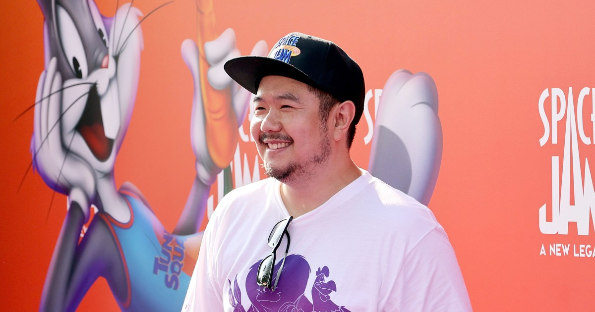
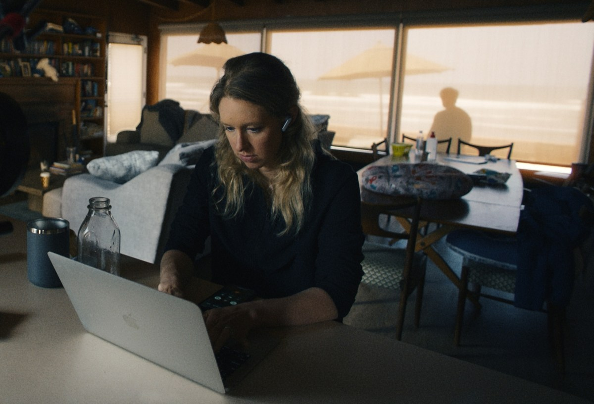
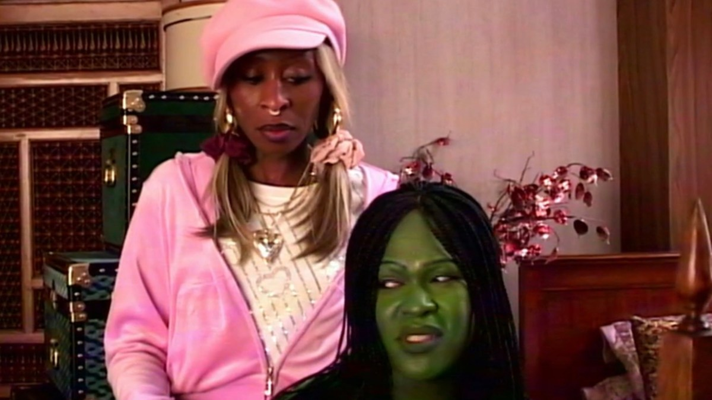

Eric Bauza, the modern voice of Bugs Bunny and Daffy Duck, dies at 46

Bauza died Sunday at his home in Los Angeles, and the county medical examiner listed hypertensive cardiovascular disease as the cause. His family announced it on his Instagram, calling him “the modern voice of iconic Looney Tunes characters Bugs Bunny and Daffy Duck, along with dozens of other beloved cartoon characters.” The three-time Emmy winner voiced Bugs, Daffy, Porky Pig, Tweety, Elmer Fudd and more for about 15 years at Warner Bros. Animation, including in this year’s Coyote vs. Acme.
Warner Bros. TV chief Channing Dungey said he “followed in the footsteps of giants like Mel Blanc.” Jack Quaid called the news “absolutely devastating,” and Grey DeLisle, Jim Cummings and Ron Funches posted tributes too. Bauza once told NBC News he was the first person of color to voice Bugs Bunny, and that “Looney Tunes transcends all languages and all cultures.”
You Can See Everything grows 25% in its second weekend

Clayface won the weekend with $24 million, but the bigger story was right behind it. Nathan Fielder and Lance Oppenheim’s three-hour Elizabeth Holmes documentary made $19.5 million after expanding from 855 to 2,655 theaters, up from its $15.6 million opening. It’s at $45.1 million on a $7 million budget and is now A24’s highest-grossing documentary.
IndieWire credits A24’s secrecy, which convinced people the only way to avoid spoilers was to buy a ticket, and the film is drawing an unusually young crowd. It has already passed Melania as the year’s top doc, and the Oscar talk is getting louder, though Fahrenheit 9/11’s $222 million record is safe.
Olivia Rodrigo is back at No. 1, with Zach Bryan right behind her
you seem pretty sad for a girl so in love returns to the top of the Billboard 200 for a third nonconsecutive week, 19 weeks after its June debut. It earned 75,000 units, up 15%, driven mostly by the new “Expectations” remix with Chappell Roan and its music video.
Zach Bryan’s surprise eight-song set Young Manhood and Other Donatable Organs, featuring Lana Del Rey and Turnpike Troubadours, debuts at No. 2 with 65,500 units. Taylor Swift’s The Life of a Showgirl drops from No. 1 to No. 5, and the full chart posts Tuesday.
Cynthia Erivo’s “Nigerian Wicked” sketch on SNL UK goes viral

Hosting SNL UK Saturday, Erivo swapped roles and played Glinda, in a blonde wig and pink velour tracksuit, opposite writer Ayoade Bamgboye’s Elphaba in a lo-fi Nollywood take on Wicked. Instead of “What Is This Feeling,” Glinda just slaps Elphaba. In the “Emerald, White and Emerald City” of LagOz, Glinda wants a Birkin and Elphaba wants a “skinny BBL,” prompting the Wizard’s line: “She wants a BBL that defies gravity!”
The sketch passed 1.6 million YouTube views within a day, and NME rounded up fans calling it one of the best SNL sketches ever. Former host Aimee Lou Wood said she could write a book about how much she loves Bamgboye.
Bottom of the news
- Clayface finished at $24 million domestic and about $43 million worldwide on a reported $40 million budget, while Laika’s Wildwood took third with about $11 million.
- Street Fighter fell 72% in its second weekend to $8.6 million.
- Netflix reportedly offered Microsoft $500 million for seven years of Xbox film and TV rights before the talks collapsed after Bela Bajaria’s exit.
- Sofia Vergara and Imagine Dragons’ Dan Reynolds sparked dating rumors after a Beverly Hills dinner.
- Christy Carlson Romano said on a podcast that Shia LaBeouf trash-talked Hilary Duff during the Disney Channel years.
- Other Desert Cities opened on Broadway at the Hudson Theatre, and Jonathan Groff is returning in The Amish Project.
- “Weird Al” Yankovic will screen UHF with a live orchestra at the Greek Theatre on Halloween.